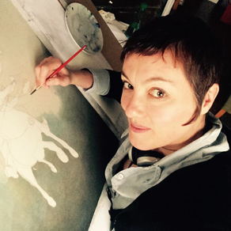
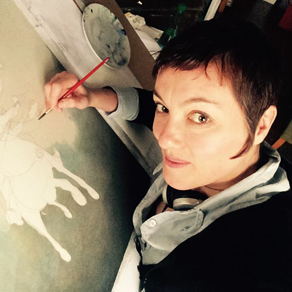

海貝卡．朵特梅（Rebecca Dautremer）
1971年生於法國蓋普（Gap）。就讀於巴黎國立高等裝飾藝術學院（ENSAD）期間，教授 們很快就看出她的才華，鼓勵她從事青少年繪本創作。1996年發表處女作，目前定居巴黎。已 婚，育有三個小孩。她也為青少年刊物創作。熱愛攝影。
海貝卡．朵特梅原本對設計、圖像，特別是攝影比較有興趣。他說：「與Gaultier Languereau出版社的相遇是個轉捩點，在那之前我並沒有想朝出版業前進的打算。Gaultier Languereau出版社想要找一個人來幫忙繪圖、上色和裝飾！就是做一些簡單的事就是了......藝 術總監與我，我們的意見非常地一致，因此，第一本畫冊他便委託我負責繪製插圖，然後第二 本......其他的出版社在看到我的作品後也開始跟我接洽。」
「我承認有很長的一段時間我認為我只會短期地從事插畫的工作。但是今天我完全認同了我 插畫家的身份且把所有的時間都投注在那裡面。」
1996年，海貝卡幫Maurice Genevois的書《狼群裡的羊》(La chèvre au loup)繪製了一些非 常傳統的插畫，看到插畫是怎樣地被製造出來，知道了如何創作後，第二本畫冊是一本比較個 人然而實際上卻是以愛情為基準點的作品，在這本畫冊海貝卡開始知道自己想要做的是什麼， 一直到現在不但感到更自由且表達的方法也更能夠依據本能來發揮！
海貝卡很少在繪圖之前去看其他插畫家的作品，反而是受到照片啟發很多，海貝卡會參考非 常多的攝影書籍的取景、顏色、光線。電影也是靈感來源，嘗試像攝影師一樣工作，考慮佈局 、景深，使用柔焦的技法，「不過相對於使用一台相機來捕捉影像，我使用一支鉛筆更為成功 。」海貝卡笑著說。
目前海貝卡還沒有自己的專屬網站，但確定將來會擁有自己的網站，海貝卡還在想一個適合 的網站名稱。
 
